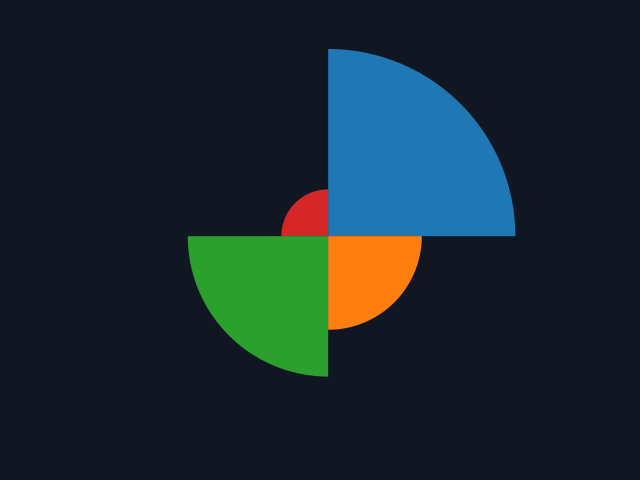
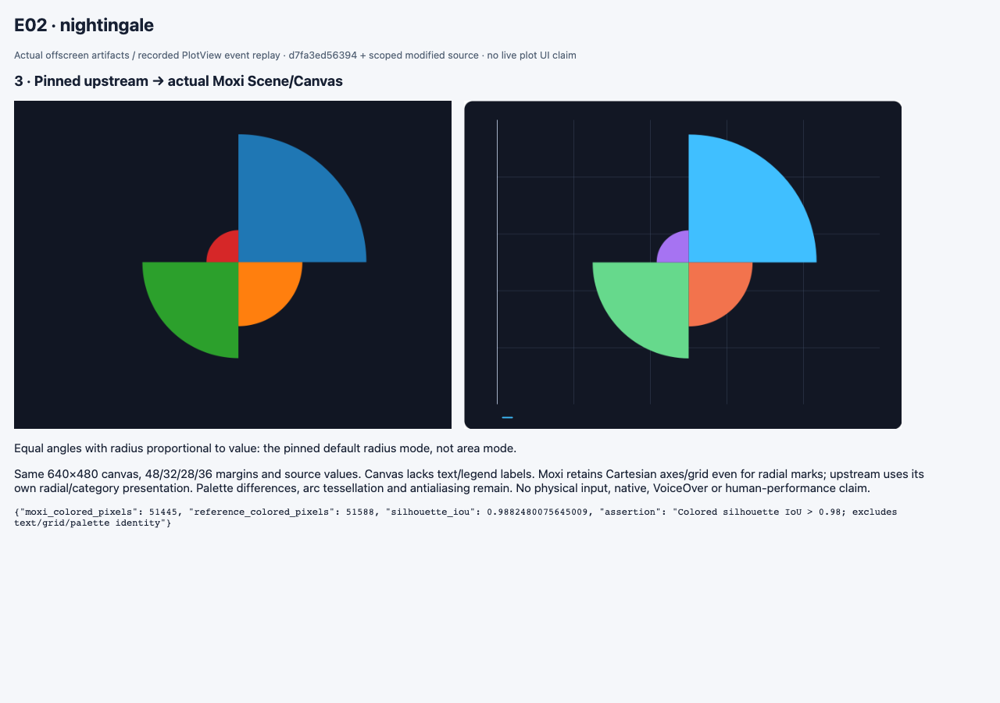
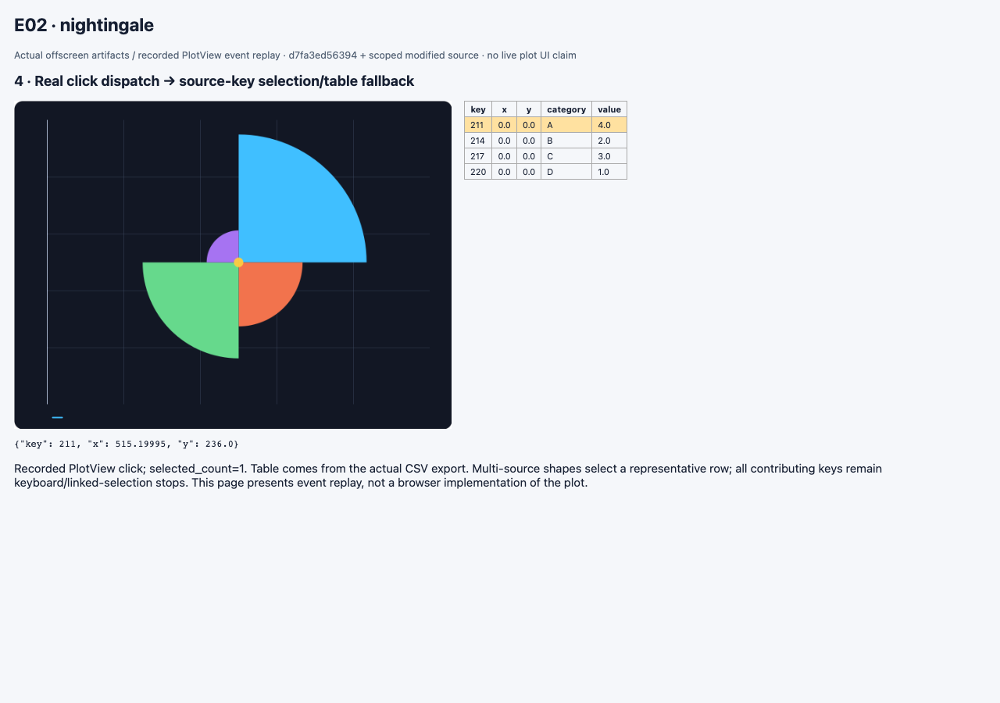

Source data/schema Action: Open source.html Expected: Source fields and nontrivial stable keys
initial · browser · 1280 × 900 pixels

Pinned upstream output Action: Run upstream.py Expected: Genuine upstream chart
initial · offscreen-render · 640 × 480 pixels

Actual Moxi comparison with narrow assertions Action: Open comparison.html Expected: Real Canvas output and classified remaining differences
result · browser · 1280 × 900 pixels

Source-key selection/table fallback: recorded event replay Action: Runner dispatches recorded click; open selection.html Expected: Selected key and exported source table agree
interaction · browser · 1280 × 900 pixels
Export and data update Action: Canvas/SVG/Python PNG/PDF export; add 1.5 to first source value (grid scalar for contours) Expected: Actual changed output; selection clears
Restore original source data Action: replace_data(original) Expected: Actual restored output equals initial Canvas pixels
recovery · offscreen-render · 640 × 480 pixels
Contact sheetReproduce
See ../plot-wave-b-c-review/REPRODUCE.md for this integrated-source batch and checks.
Equal angles with radius proportional to value: the pinned default radius mode, not area mode. Same 640×480 canvas, 48/32/28/36 margins and source values. Canvas lacks text/legend labels. Moxi retains Cartesian axes/grid even for radial marks; upstream uses its own radial/category presentation. Palette differences, arc tessellation and antialiasing remain. No physical input, native, VoiceOver or human-performance claim.
Screenshots show recorded states. They do not establish latency, scientific accuracy, physical IME, screen-reader behavior, or human usability.